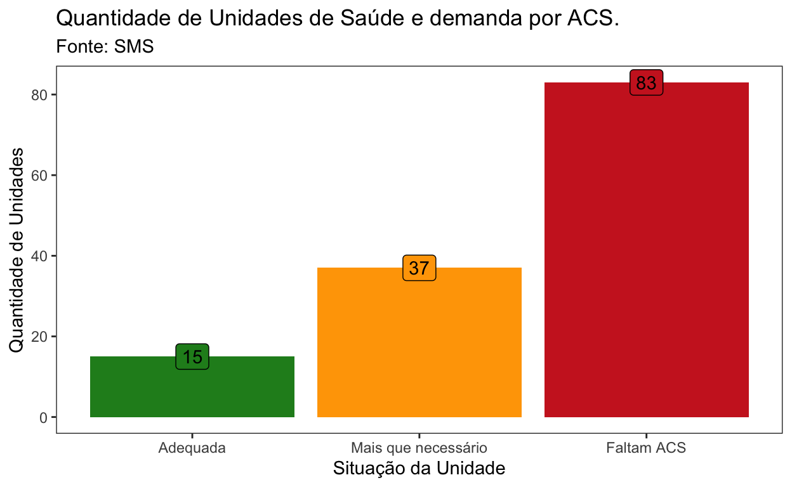

Analise sobre o Quantitativo de distribuição dos Agentes Comunitários de Saúde.
O objetivo desta análise é avaliar os quantitativos existentes e sua alocação nas equipes de estratégia da saúde da família (ESF).
São 135 unidades de saúde, com 315 equipes de estratégia da saúde da família. As equipes de estratégia da saúde da família precisam de 1 ou 2 Agentes Comunitários de Saúde (ACS) para serem consideradas completas. As equipes completas tem seu financiamento programado. Equipes incompletas não recebem recursos federais.

O Agentes Comunitários tem, em Porto Alegre, 2 tipos de contratos: via Emenda 51 (E51) e via IMESF (CLT), com regramentos distintos.
Na primeira etapa da análise observa-se que das 135 unidades de saúde, 40 unidades estão totalmente supridas com os contratos via Emenda 51 (E51).
Temos 15 unidades que estão supridas sem excedentes de ACS e 25 unidades com excedentes. Essas 40 unidades necessitam coletivamente de 75 ACS e no momento dispõe de 124 ACS via E51. Contabiliza-se portanto um total de 49 de ACS a mais do que necessário nessas unidades.
Os ACS contratados por E51 não podem ser demitidos e estão fixados geograficamente, não podendo ser remanejados mesmo se a quantidade em uma Unidade de Saúde (US) exceder a necessidade desse local, ele lá permanecerão como excedente.
São consideradas aquelas unidades que tem a quantidade necessária de ACS, não importando qual a sua vinculação trabalhista.
A